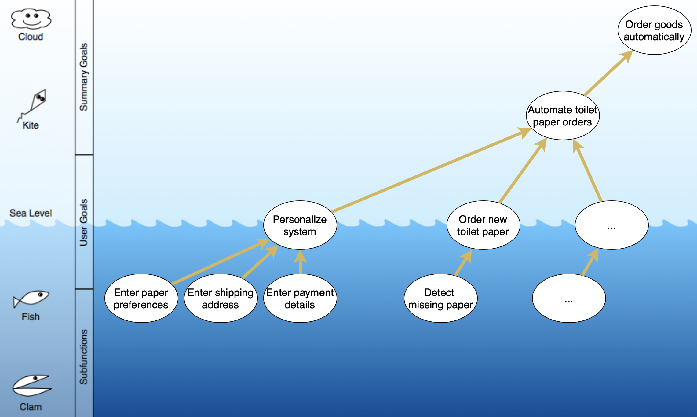

Use Cases
What are Good Use Cases?
You have now already learned a lot about use cases and seen some examples, and know which goal we have when designing use cases. So what are the characteristics of good use cases?
Step 1: Teamwork
- Use 3 to 5 minutes of silence where each of you thinks about what are characteristics of a good use case.
- Each one should come up with about 3 to 5 such suggestions.
- Rank these suggestions.
- Try to be compact, either a word or a short phrase for each characteristic.
- Take rounds where each of you takes their top choice, and compile a complete list of attributes.
- Take rounds until you have listed all characteristics.
- Eliminate or rephrase similar characteristics as you go, to remove making the same point several times.
- Discuss and select the three most important characteristics.
- Mark the them with a star, or highlight them in yellow.
Step 2: Merge Results
On Teams, under General / Files / Unit 3, you find a document called Use Case Characteristics.docx. This document contains a large table, and each team has their column. The first column is from Team Frank.
Add the 10 highest ranked characteristics into the table. For each characteristic you add, see if another team has already written a very similar one.
- If you find a similar one, place it in the same row.
- If your characteristic is new, add it in a new row. If necessary, expand the table.
- Mark your three most important ones with a yellow highlight.
In the end, when we look at the entire document, we should see that each row describes similar characteristics but maybe with different words. Some cells stay empty if you have different choices, obviously. That’s just fine. We will talk about our different choices the week after.
Use Case Levels
Recall the different levels of use cases from the preparation, where we assigned use cases to different levels on a horizon:
In the document above, you see all use cases lined up at the sea-level, but many of them belong either to a higher or a lower level. In case you have troubles with the document, here is a list of all the use cases it lists:
- Log into system
- Hit tab key
- Register a new customer
- Get paid for a car accident
- Buy a book
- Provide students loans.
As you can see, these use cases do not relate to the same system. Use some fantasy to think about the systems around them, most should be obvious.
- Make a copy of the diagram. Here is the direct link to it.
- Move the use cases up and down, and discuss them.
- Argue why they should be on a certain level.
- Compare the use cases with each other, and see if the level also fits relative to each other.
- Once you are happy with the level of all use cases, fill out the quiz (once per team.)
- See if you agree with the answers. If not, discuss on MS Teams!
Use Cases for Your Project
For the delivery T1 that covers requirements, you will need to deliver a set of use cases. Today, you should start delivering them.
Use Case Levels
For your project delivery, you should focus on three use cases at the sea-level. As you have seen above, these are the use cases most important to get right. The ones above provide direction and connect to your system’s goals and purpose, but are more abstract. The ones below sea-level provide too much detail.
- Make a copy of the use case level document, and start filling it with some use cases for your system.
- Be critical so that you capture the most important three use cases at the sea-level of your system.
- Look at higher-level ones, how they can be decomposed into sea-level use cases.
- Look at lower-level ones to see if they can be aggregates into sea-level ones.
- Ignore clam-level use cases.
- Store a screenshot of your results for your T1 delivery.
As an example, look at the use cases below I sketched for one of the many toilet paper ordering systems. My focus is at the sea-level, where I added two and think about a third one. I added a few use cases at the fish, kite, and cloud level, and connected the use cases with some arrows to show their dependencies. Try to follow the same strategy for your use cases.

Use Case Diagram
Remember that the diagrams with the sea-level are not use case diagrams, they are just a tool to find the use cases at the right level and relate them to each other. You should now start to create a use case diagram for your system. (See compendium Fig. 8-2 on p. 149.)
- Based on the three use cases at the sea-level you found above, create a use case diagram.
- Identify the actors connected to each use case.
- Store this diagram, as you will need it for the T1 delivery.
Tabular Use Case Specification
For your system, you also need to deliver the tabular specification of the use cases, like the one in Fig. 8-3 on page 150. Each table should fit on one A4 page.
- Start outlining all three tables.
- Review if your use case really is at sea-level.
- Finish the use case tables if you have time left. Ideally, these will be close to the ones you submit into T1.
Plan T1
At this point, you have all information and knowledge needed for the delivery of T1.
- Read through Delivery T1
- Plan how you will complete the work.
- Ask any question on MS Teams, ideally in public.
- Talk through the peer evaluation.
- What do you think should count?
Checklist
Team Reflection for This Unit
- Add another section to the team reflection document, just like last week.
Individual Reflection
- Fill out the individual reflection survey.
- Copy the answers into a document that you maintain on your own.
- Add any additional observations to your reflection diary.